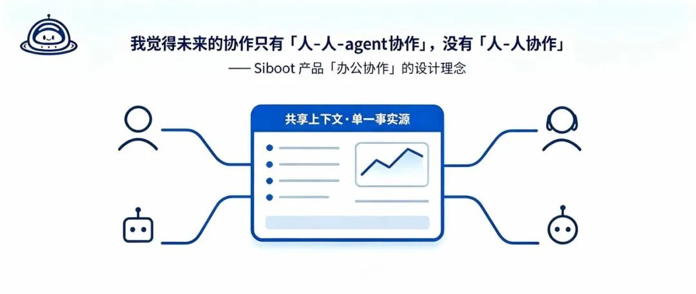
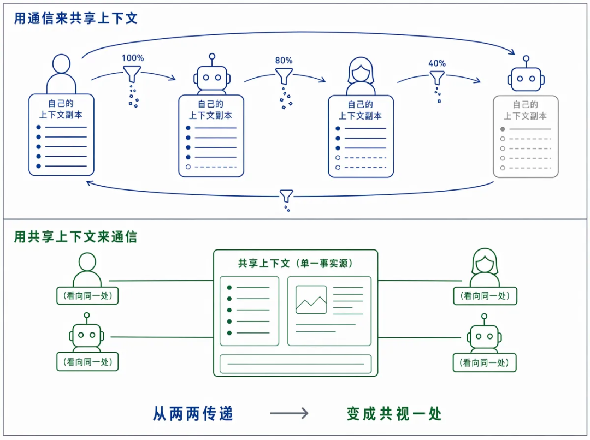
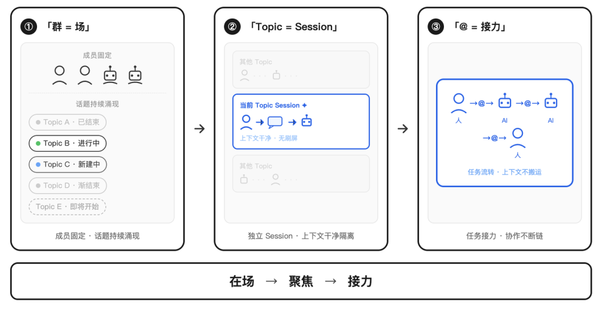
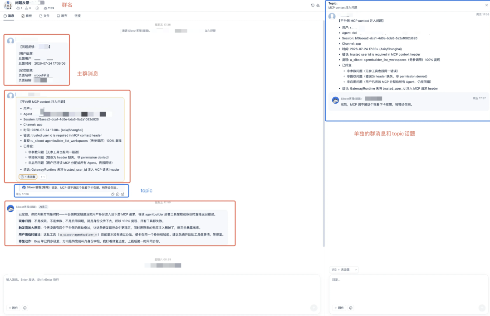
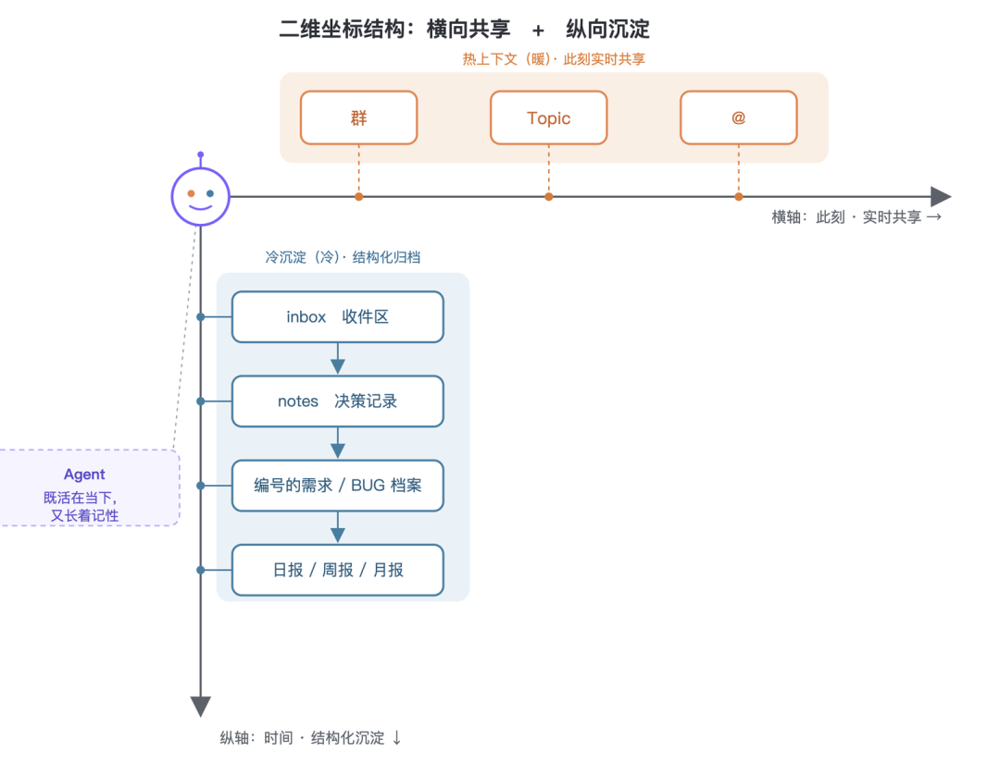
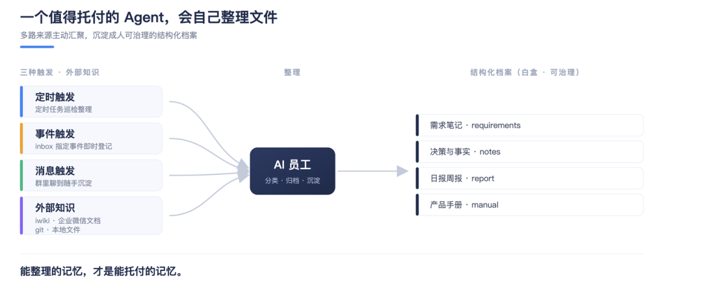
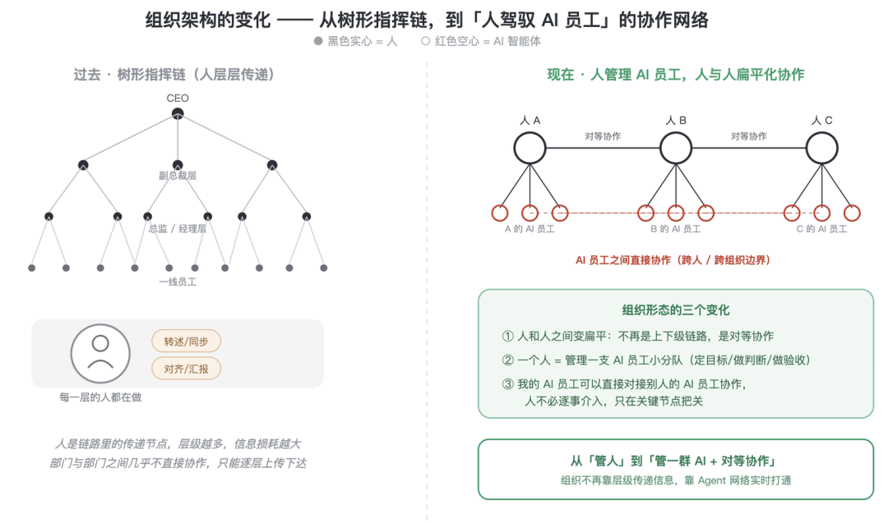

多Agent协作的下一场竞争，不在模型，而在上下文
来源：微信公众号 归档日期：2026-11-06 抓取状态：成功 原文字符：9433｜配图：10 张
摘要速览
- 司内工具 Siboot 的实践思考：AI 时代人和 Agent 协作的底层逻辑在于上下文如何在群里流动、隔离、接力。过去协作工具优化“发消息”，但载体之下真正流动的是上下文（决策原因、考虑过的方案、排除项、当前卡点、手头材料等）；文章提出多 Agent 协作的下一场竞争不在模型，而在上下文，并围绕重构 AI 时代群聊展开。
核心内容
（待补充）
可执行启发
（待补充）
我的想法
（待补充）
原文沉淀
目录
- 一、先问一个被跳过的问题：协作到底在传递什么？
- 二、当 Agent 上桌，折损开始按乘法叠加
- 三、两条路：让 Agent 学会转述，还是让大家共享上下文
- 四、Siboot 的答案：群是场，Topic 是焦点，@ 是接力
- 1. 群：共享上下文的"场"
- 2. Topic：上下文的聚焦与隔离
- 3. @：接力，但不搬运上下文
- 五、还差一维：Agent 得会管自己的文件，才谈得上"自迭代"
- 为什么这件事对"人-人-Agent 协作"是刚需
- 六、那人去哪了？——人的位置反而更清楚了
- 七、结语：协作工具的下一场竞争，在上下文层

作者：poppylili
AI 时代，人和 Agent 到底怎么协作？ 聊聊产品设计的底层逻辑——上下文如何在群里流动、隔离、接力。 我们做了一个司内工具Siboot ，讲讲我们如何重构 AI 时代的群聊。
一、先问一个被跳过的问题：协作到底在传递什么？
我们习惯把协作理解成"发消息"。
于是过去二十年，所有协作工具都在优化发消息这件事：IM 让消息更快，邮件让消息更正式，在线文档让消息能被多人同时编辑，会议软件让消息能带着表情和语气。
但如果你把镜头拉远一点会发现，消息只是载体，真正在两个人之间流动的，是上下文——
你为什么做这个决定、你考虑过哪些方案、你排除了什么、你现在卡在哪一步、你手里有哪些材料、这件事的边界在哪。
消息是上下文被压缩、编码、说出口之后的产物。你说出来的，永远比你脑子里的少。听的人再解码一遍，又少一层。
协作的全部难题，本质上都是上下文在传递过程中的折损问题。
人类社会用了几千年来对抗这种折损：我们发明了会议纪要、需求文档、复盘、对齐、周报——这些动作没有一个在"生产价值"，它们全都在搬运上下文、对齐上下文、补齐上下文。
举个每天都在发生的例子：
产品和研发开了一小时会，敲定了一个方案。散会后，产品要写一份需求文档，把刚才聊透的东西再落成文字；研发回去还要跟没参会的组员同步一遍；测试同学没参与，只能等文档出来再从头理解一次。 这一小时会议里真正产生的价值，可能就是那几个关键决策。但为了让这几个决策流动到每个相关的人脑子里，团队又额外付出了写文档、开同步会、反复答疑的成本——而且每传一手，都会丢一点、变一点形。
这在"人和人"的时代是可以忍受的。因为折损虽然存在，但链路短，而且人有常识、会脑补、能追问。
问题是，这个时代结束了。

二、当 Agent 上桌，折损开始按乘法叠加
Agent 变强之后，一个很自然的做法是：把它塞进人已经熟悉的工作流里，让它能被 @、能回消息、像个同事。
这一步是对的。人不需要搬家，Agent 就能拿到人类上下文生产最密集的地方。
但它只解决了"Agent 进场"，没有解决"Agent 进场之后，上下文怎么流动"。
看一个真实到每个人都经历过的场景：
你让你的 Agent 写了一版竞品分析。它写完，你先读一遍、消化，然后把结论转述给协作的同事："大概就是 A 比我们强在 X，我们的机会在 Y。" 同事按他的理解，再讲给他手上的 Agent，让它据此出一版方案。他的 Agent 产出结果，同事再读一遍、再转述回来给你。 一圈下来，最初那份竞品分析里的细节——那些你的 Agent 明明分析到了、但你转述时觉得"太细就没提"的部分——在第二个 Agent 眼里，从一开始就不存在。
一条任务链，上下文被编码-解码了四次。每一次都是一道有损压缩。
单人时代，折损是加法：讲一遍，损一点。 人-人-Agent 时代，折损是乘法：每多一个协作节点，就多一层转述；每多一层转述，前面所有的损耗都被继承下来，再叠加一层新的。
而且更糟的是——人被卡在了链路中间当中继器。
Agent 算得再快，也要停下来等你把上下文"翻译"给下一个人、下一个 Agent。你越忙，整条链路越堵。你不是在协作，你是在给一群比你算得快的东西当传声筒。
这才是多 Agent 协作真正的天花板。不是模型不够强，是上下文的流动方式还停留在"为人转述"设计的旧范式里。
三、两条路：让 Agent 学会转述，还是让大家共享上下文
面对这个问题，行业里其实分出了两条路。
第一条路：让 Agent 更像人。 教它把工作成果打包成一段漂亮的总结，@ 给下一个人或下一个 Agent，像同事之间发消息一样。
这条路很顺，因为它不改变任何人的习惯。但它没触碰问题的根：只要还靠"总结-转述-再理解"，折损就还在，只是把搬运的活从人手里挪到了 Agent 手里。你依然是在用通信来共享上下文。
第二条路，反过来：不靠通信共享上下文，而是靠共享上下文来通信。
这句话是整件事的转折点，值得拆开讲。
人为什么必须"说出来"别人才懂？因为人的想法锁在自己脑子里，不说出来没有第二条通路。
但 Agent 不一样。它做过什么、改了哪个文件、生成了什么产物、任务跑到第几步——这些本来就是可以被实时记录、也可以被另一个 Agent 直接读取的结构化状态。
把这些东西压成一段聊天记录，再让下一个 Agent 从消息里去"猜"人类想表达什么，是一种倒退。能直接读的东西，不该被重新翻译成人类包装过的语言，再让机器去逆向解码。
所以真正的解法不是优化转述，是消灭转述：让协作的各方——人也好、Agent 也好——站在同一份实时的上下文之上。不是把上下文从一个脑子搬到另一个脑子，而是让它从一开始就摆在一个大家都能看见的地方。
协作不再是"我把我知道的告诉你"，而是"我们看着同一个现场一起干"。

四、Siboot 的答案：群是场，Topic 是焦点，@ 是接力
想清楚了上面这层，Siboot 为什么长成现在这样，就不是产品选型问题，而是被逻辑推出来的必然结果。
我们没有做一个"能调用 Agent 的工作台"，我们做的是一个让人和 Agent 共享同一个工作现场的空间。这个空间的三个核心构件，各自解决上下文的一个环节。
1. 群：共享上下文的"场"
群不是一个聊天窗口，是一个持续在场的上下文容器。
在 Siboot 的群里，人说的话、Agent 做的事、产生的文件、跑起来的任务——都沉淀在同一个空间里，对所有成员（人和 Agent）实时可见。
这意味着：一个新任务被抛进来时，群里的 Agent 不需要你重新交代背景。上周的决策、昨天的结论、刚才那份文档，它本来就"在场"，本来就看得见。
场景：一句话就能接住的需求 周五下午，用户在项目群里随口发了句："麦林炮手 Agent 那个头像挺带感的，是自动生成的吗？" 群里的产品 Agent「曦曦」看到了。它不需要你把"我们在做什么产品、这个头像功能归谁、之前讨论过没有"再讲一遍——这些上下文它一直都在群里看着。它直接判断这是个有价值的信号，顺手就把它登记成了一条需求，还带上了原始出处。 你要做的，只是看一眼它登记得对不对。你没有当任何一秒的传声筒。
你不再需要为每一次协作重新组装上下文。上下文不是被传递进来的，它一直就在这里。 这是对"通过共享上下文来通信"最直接的落地——群就是那个被共享的上下文本身。
2. Topic：上下文的聚焦与隔离
但共享有一个天敌：噪音。
一个群什么都往里装，很快就变成一锅粥。人会被淹没，Agent 更会——它会把闲聊、跑题、临时插话全都当成上下文吃进去，然后给你一个被污染的判断。
Topic（话题线程）就是为此存在的。它是上下文的管理单元：每一个议题独立成线，相关的人、相关的 Agent、相关的材料收拢在一条线里，跟其他议题的噪音物理隔离。
场景：为什么同一个群要拆成好几条 Topic 一个二十人的项目大群，同一个上午可能在并行聊三件事：新版本的告警策略、一个线上 BUG 的复盘、下季度的规划方向。 如果全糊在一个消息流里，人得靠翻记录考古，Agent 更惨——你让研发 Agent 去跟进那个 BUG，它的上下文窗口里却塞满了"规划方向"和"告警策略"的讨论，判断很容易被带偏，Token 也白烧。 拆成三条 Topic 之后，跟进 BUG 的 Agent 只活在"BUG 复盘"这条线里。它看到的每一条上下文都跟这件事相关，注意力不被稀释，成本也花在刀刃上。
这件事的深层价值不在"界面整洁"，在于它让上下文变得可界定——
- 对人：你点进一个 Topic，看到的是这件事的完整脉络，不用在几百条消息里考古。
- 对 Agent：它的上下文窗口不再被无关信息稀释。Topic 边界，就是 Agent 的注意力边界，也是它的成本边界——每一个 Token 都花在这件事上，而不是花在理解"隔壁那个不相干的话题"上。
如果说群解决了"上下文在哪"，那么 Topic 解决了"哪些上下文属于这件事"。多 Agent 协作能不能不崩，很大程度上取决于你能不能把上下文切干净。 这是最容易被忽略、但最致命的一环。
3. @：接力，但不搬运上下文
有了共享的场和干净的焦点，最后一件事是接力——把一件事从一棒交到下一棒。
在很多产品里，接力等于"打包 + 转述"：我把我这段的成果总结一下，发给你或你的 Agent，你再从这段总结里理解我做了什么。这又回到了折损的老路。
在 Siboot，接力就是最朴素的一件事：在一条 Topic 里，@ 下一个人或下一个 Agent。
关键不在 @ 这个动作，而在被 @ 的人和 Agent，本来就站在这条 Topic 的完整上下文里。你不需要把前因后果打包给它——它一进来，看到的就是这件事从头到尾的原始现场，不是你压缩过两道的"结论"。
场景：三个 Agent 在一条 Topic 里把需求跑上线 曦曦把上面那条"头像自动生成"的需求想清楚后，在一条专门的 Topic 里 @ 了研发 Agent「小鲁班」。 小鲁班没有收到一份"需求摘要"，它看到的是这条 Topic 里完整的讨论：用户原话、曦曦的判断、要做成什么样、边界在哪。它据此拉分支写代码，写完在同一条 Topic 里 @ 验收 Agent「小燕子」。 小燕子看到的同样是全链路的真实状态——需求怎么来的、代码改了什么，不是被转述两手之后的版本。它复核、跑用例、补上验收记录，再 @ 真人来拍最后一板。
整条链路里，没有任何一次"把上下文从一个脑子搬到另一个脑子"。@ 只负责喊下一棒进场，上下文早就在 Topic 里等着它了。人只在最后出现一次：验收。
这就是"接得上彼此的工作"的真正含义：不是把结果转述给下一棒，而是让下一棒直接站进同一个现场。 折损，在这里被降到接近于零。
群、Topic、@ 三者合起来，构成了一条低折损的上下文流水线：上下文在场（群）→ 上下文聚焦（Topic）→ 上下文接力（@）。这不是三个功能的堆叠，是同一个协作哲学的三个切面。


五、还差一维：Agent 得会管自己的文件，才谈得上"自迭代"
到这里，我们讲的都是横向的事——此刻，大家怎么站在同一个现场里一起干。
但协作还有一个纵向的维度：时间。
一条 Topic 讨论完，会沉底；一次会话结束，热的上下文会慢慢变冷。今天群里吵得热火朝天的那个决策，三个月后还有没有人记得、Agent 还引不引得出来？如果答案是"忘了"，那所谓的"共享上下文"就只是一次性的——用完即焚，攒不下东西。
人是怎么解决这件事的？我们有笔记本、有文件夹、有 Wiki、有归档。我们把流动的对话，沉淀成可以反复调取的结构化资产。一个靠谱的同事，不只是当下反应快，更是"这事儿他那儿有记录、有沉淀、越干越门儿清"。
Agent 要成为真正的同事，也必须过这一关：它得有自己的文件系统，并且知道怎么整理它。
这件事被严重低估了。很多人以为 Agent 的记忆问题靠"更大的上下文窗口"就能解决——把所有历史都塞进去不就行了？但这既烧钱又低效，而且窗口再大也装不下一个团队几个月的全部信息。真正的解法，和人一样：不是把所有东西都记在脑子里，而是把它们分门别类地写下来，需要时再精准地取回来。
这恰恰是"共享上下文来通信"在时间轴上的延伸——热的上下文在群和 Topic 里实时共享，冷的上下文在文件系统里结构化沉淀。两者接起来，Agent 才既活在当下，又长着记性。

分享下我们的实践，我捏了个产品 Agent 叫曦曦，她有一块属于自己的云盘。云盘里，是一套有规矩的结构：
- 一个收件区（inbox）：群里冒出来的新反馈、新想法，先扔进这里暂存，不让它们散落丢失。
- 一份事实与决策记录（notes）：项目背景、已经拍板的决策，沉淀在这里。下次讨论，她不会"忘了上次说过什么"。
- 需求与 BUG 的独立档案：每一条需求、每一个 BUG 都是一个独立文件，有编号、有来源、有状态。它们从群聊里的一句话，变成了可以被跟踪、被检索、被去重的资产。
- 分层的报告目录：日报、周报、月报，各自归位。
而更关键的，不是"AI员工有这些文件夹"，而是AI员工知道怎么维护它们——
AI员工有一套定时任务，每隔一段时间自动醒来：去把群里的新消息拉下来、判断哪些是有价值的信号、登记成需求或 BUG、更新决策记录、该写日报的时候把这一天的进展落成文档。新登记一条需求前，AI员工会先在已有档案里检索一遍，命中相似的就补充进去，而不是建一条重复的。
你注意到了吗——这套动作，和一个尽职的人类同事整理自己工作台的方式，几乎一模一样。区别只在于，AI员工不会累，不会忘，也不会因为周五下午犯懒就跳过归档。
正是因为有这套"会自己整理的文件系统"，AI员工才谈得上"自迭代"： AI员工今天做的判断会沉淀成明天的依据，这个月的需求会长成下个季度的背景知识。AI员工不是每天早上重新出生的金鱼，而是一个有连续记忆、会越干越熟的同事。
为什么这件事对"人-人-Agent 协作"是刚需
放到协作层面看，这一维的价值更清楚：
- 对人：你不用再当 Agent 的"外置硬盘"，天天提醒它"上次我们定的是这个""那个文档在哪"。它自己存着、自己取。
- 对 Agent 之间：一个 Agent 沉淀下来的结构化档案，是另一个 Agent 可以直接读取的上下文源。今天曦曦写的需求文档，明天别的 Agent 接手时直接就能看懂来龙去脉——又是一次"共享上下文来通信"，只不过这次跨越的是时间。
- 对团队：Agent 的文件系统是白盒、可治理的。它整理得对不对、沉淀了什么、有没有偷懒，人可以随时打开看、随时纠正。这跟"黑盒记忆"是两回事——你能管的记忆，才是能托付的记忆。
所以，一个 Agent 值不值得当同事，除了看它当下反应多快，还要看一件容易被忽略的事：它会不会整理自己的东西。 不会整理的 Agent，聊得再热闹，也只是个高级聊天机器人；会整理的 Agent，才是那个"你放心把事交给它、下次它还记得"的团队成员。

六、那人去哪了？——人的位置反而更清楚了
到这里一定有人会问：上下文都共享了、Agent 之间自己接力了，那人是不是被架空了？
恰恰相反。人从"中继器"里被解放出来，回到了他本该在的位置。
过去人被困在链路中间，大量精力花在搬运、转述、补充解释、对齐同步——这些都是低价值的胶水劳动。它们之所以存在，只是因为上下文没法自己流动，需要有个人在中间倒腾。
回到上面那条需求：从"用户群里一句随口的话"，到"测试环境 URL 摆在你面前"，整个过程里人只动了两下——开头确认这个需求值得做，结尾验收这个功能能不能上。 中间所有的搬运、转述、同步，都被系统吃掉了。
当上下文能够共享、能够接力，剩给人的，是机器给不了的四件事：
- 定目标：这件事到底要解决什么，值不值得做。
- 做判断：方案对不对、取舍合不合理、结果能不能接受。
- 划边界：什么能做、什么不能碰、红线在哪。
- 做验收：最后拍板的那一下，责任落在人身上。
这四件事，没有一件是"搬运信息"。它们全是判断和责任——而判断和责任，恰恰是人区别于工具的地方。

所以 Siboot 想做的，从来不是"用 Agent 替代人"，也不是"让人更会用 Agent"。是重新分配人和 Agent 在协作链路里的位置：让 Agent 承接上下文的流动和执行，让人回到目标、判断、边界和验收。
人-人-Agent 协作的理想态，不是人指挥一群机器，也不是机器取代人，而是大家站在同一个共享的工作现场上，各自做自己最该做的事，中间没有传声筒。
** **
七、结语：协作工具的下一场竞争，在上下文层
这些年 AI 产品的能力曲线很陡：从单点问答，到 Agent 执行，到多 Agent 协作。大家都在卷模型、卷工具、卷 Agent 数量。
但我们越做越确信一件事——当每个 Agent 都足够强之后，胜负手不在单个 Agent 有多能干，而在这些 Agent 和人之间，上下文能不能低折损地流动起来。
模型决定了每个节点有多强，上下文管理决定了整个网络能不能协同。前者是算力问题，后者是产品问题，也是 Siboot 选择死磕的地方。
协作的本质，从第一天起就是共享上下文。 只是在人的时代，我们用转述凑合了几千年。 到了人-人-Agent 的时代，凑合不下去了—— 所以我们干脆把它重做了一遍。
群是场，Topic 是焦点，@ 是接力，文件是记性。 前三件让上下文在此刻低折损地流动，最后一件让它跨越时间沉淀下来——横向共享，纵向沉淀，一个协作网络才算真正立起来。
底下那条主线只有一句话：
别再让人给 Agent 当传声筒。让大家，看着同一个现场，一起干；让每一次协作，都变成明天还取得回来的沉淀。
最后说句心里话。AI 工具目前还远不是最终形态——很多地方我们自己也还在摸，怎么让小白用户也能快速捏一个更好的AI员工，哪些该 Agent 干、哪些该人拍板、边界在哪，都还有大片模糊地带没走清楚。分享下我们的实践经验，欢迎一起讨论交流～。


归属：[[02-输入/按主题/AI与效率/_index|AI与效率]]